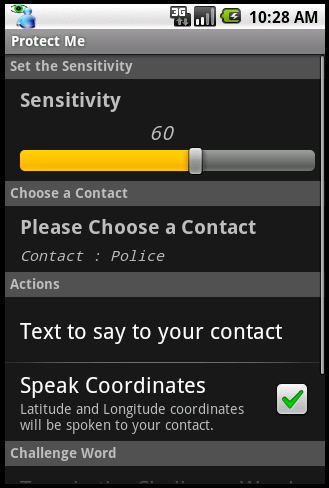
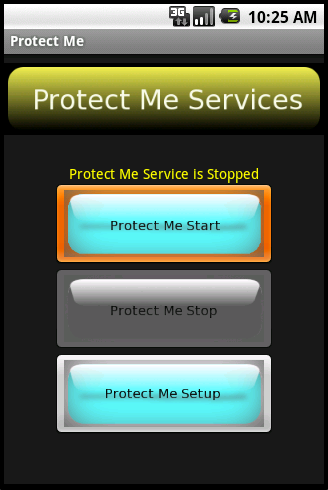

Welcome to Protect Me

Protect Me is an app which is
always watching out for your safety. If you're in an unsafe or dangerous
situation, Protect Me will call for help when you can't. There's
nothing worse than having a cell phone, but not being able to use it because
you're flustered or worse, you can't access it because your hands are
restrained. With Protect Me, you don't have to look at your phone,
or even touch your phone in order to call for help. In dangerous situations,
time is of the essence, you don't have time to fumble around with your phone.
It's also very difficult to look down at your phone and try to make a call
during a dangerous situation.
Protect Me will call your pre-determined contact and even SMS multiple contacts
with your coordinates if you wish. With Protect Me, your phone can
stay safely in your pocket or arm band, and when Protect Me detects
threats, it will audibly ask "Are you you OK". This alone will
hopefully shock an assailant and could possible stop him, but if it doesn't,
Protect Me will wait for a
response from you and if it doesn't get the correct response, or no response at all,
Protect Me will audibly say "I'm calling the police", giving more
of a shock value to an assailant,
then make the call for help. Even though ProtectMe doesn't actually call
the police, just having the phone say "it's calling the police" could scare off the assailant.
While on the phone
with your contact, Protect Me will turn on the speaker phone so your contact
can hear and respond to the situation. We are all susceptible
to some kind of attack, but with Protect Me you can have added peace of mind when going
for that early morning jog, walking to work, walking on campus to
class, or those late night walks back to your car. Stay safe.
Protect Me works by monitoring your activity and detecting shaking
or an orientation change of the phone which could be signs of trouble.
Based on the activities you
will be performing you can dial in the sensitivity or set the orientation for
activity. So for
example, if you're jogging, and you have activation set using shaking
you will want to set the sensitivity lower
than if you were walking. The sensitivity you dial in will be a
threshold for the amount of shaking required to activate the phone. If
using orientation to activate the phone, the phone will be activated if
the phone is tilted past a predetermined angle.
Once the phone is activated (shaking is beyond the preset threshold or
max angle is reached)
the phone will audibly ask you if you're OK. If the phone hears the
wrong response or no response at all, the phone will speak "I'm calling
the police" and then call the contact that you have preset within your
preferences. You have different preferences that you can select from.
The Protect Me app has four states or phases that it will go through.
They are OFF, ON, ACTIVATED, and CALLING. Each state is explained here.
OFF - This state is when the ProtectMe app is not started.
ON - This state is when Protect Me is started. When Protect Me is in the ON
state, it is "listening" for abrupt changes to the phone for example a
hostile action.
ACTIVATED - Protect Me goes into the ACTIVATED state from the ON state
when an abrupt action occurs four times within four seconds. It takes
four "shakes" within four seconds to get into this state in order to
negate false activations. When in this state, Protect Me will ask you if
you're OK. If you give the wrong response or no response, Protect Me will
go into the CALLING state. If you give the correct response, Protect Me
will go back into the ON state.
CALLING - This state is entered from the ACTIVATED state. In this
state, Protect Me will call your contact and speak the coordinates if
that's set in your preferences.
You will first setup the preferences for Protect Me to suit your needs.
Each of the preferences are explained later in this document. Once you
have all the preferences set the way you like them, start ProtectMe by
pressing the "Protect Me Start"
button (a single audible beep will be heard, and a notification will
show up in the notification bar). Once ProtectMe is started, it will
run in the background so you can perform other actions with the phone,
even lock the phone. If the phone is shaken beyond the threshold, you
will here multiple beeps. In order to activate the Protect Me
app once it's running, you will shake the phone beyond it's threshold
four times within four seconds. This is to avoid false activation, for
example dropping the phone. You should get use to activating the phone
by placing it in your pocket or purse and shake it until you hear the
phone come on and say "Are you OK?". You can then disable the ACTIVATED
state of the phone by speaking your secret word. Once your secret word
is validated with Protect Me, Protect Me will go back to the ON state.
Explanation of Preferences
Sensitivity - This in conjunction with the Force Threshold preference
will determine the amount of shaking required to put Protect Me into the
ACTIVATED state. The higher the number, the less shaking required to
put Protect Me into the ACTIVATED state while conversely, the lower the
number, the more shaking is required to put Protect Me into the ACTIVATED
state.
Please Choose a Contact - By pressing this you'll be able to select the
phone number that will be called. This will bring up your contact list.
If you'd like to contact the police, for example, add a contact called
Police and put the phone number as 911.
Text to say to your contact - If you are unable to talk, Protect Me will
speak for you. This preference should be set to say the phrase you
enter. For example “This is Beth Smith, I'm in trouble and I need the
Police.”. Note, even if this is set, Protect Me will still have an open
mic so you can speak and your contact will still be able to hear you.
Protect Me will keep you connected until either you or your contact hangs
up.
Speak Coordinates - This should be checked if you want Protect Me to speak
your current latitude and longitude coordinates to your contact.
Type in the Challenge Word - The challenge word is a word that only you
should know and it's used to tell Protect Me that you're OK. When Protect Me
is activated, Protect Me will ask you if you're OK. If you're OK and you
got into the ACTIVATED state by mistake, you speak this word and the
app will go back into the ON state. If you're not OK, and you can still
speak, you can say any other word to immediately go into the CALLING
state. If a word is not spoken within 20 seconds, Protect Me will
immediately go into the CALLING state.
Force Threshold - This preference along with the Sensitivity preference
is used to set the amount of shaking required to put Protect Me into an
ACTIVATED state. This value should be any where from 1.0 - 6.0, but can be adjusted
for phones with more or less sensitivity within the accelerometer. This
value should not be adjusted unless you find your phone is more or less
sensitive than normal.
Frequently Asked Questions (FAQ)
1. What if my phone is locked? Will it still be able to call my contact?
Yes. When the phone is locked and then is ACTIVATED meaning the phone
has detected some hostile actions, Protect Me will disable the lock and
ask you if you're OK. If you give the wrong response or no response,
Protect Me will call your contact. If you give the correct response,
Protect Me will automatically put the phone back to the locked state.
2. What's the best way to put the Protect Me
application into the ACTIVATED state?
We recommend you test different situations. For example, place the
phone in your purse and shake the purse until it's activated, and do
this multiple times so you get used to what shaking is required to
activate Protect Me. Keep in mind that your arms may be restrained so
shaking your body or stomping your feet may be required to activate Protect Me
so you should try activating Protect Me by stomping your feet.
3. When I go running I have the phone in my pocket, and Protect Me gets
activated frequently. How can I stop this from happening without
turning the sensitivity way down?
We recommend having the phone placed in an arm band or waist band while
running. When the phone is in your pocket, the phone moves around quite
a bit setting off some false activations, but keeping the phone snuggly
against your body while running will drastically reduce the amount of
false activations.